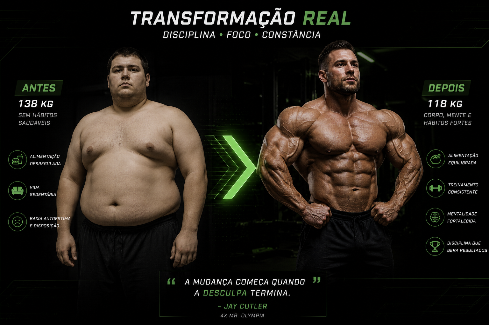

Emagrecimento
O emagrecimento envolve a redução do peso corporal e, quando o objetivo é reduzir gordura, costuma depender de um déficit energético sustentado. O treinamento de força ajuda a preservar a massa muscular, enquanto atividades aeróbicas contribuem para o condicionamento e o gasto energético.

Volume de treino e emagrecimento
As séries semanais são o total de séries de trabalho feitas para cada grupo muscular ao longo da semana. A musculação pode ajudar a preservar a musculatura durante a perda de gordura. Uma faixa aproximada de 10 a 20 séries semanais por grupo muscular pode ser uma referência para algumas pessoas, mas o volume precisa respeitar experiência, recuperação, rotina e condição física.
O emagrecimento não depende de um exercício específico. Alimentação, sono, atividade diária e consistência também influenciam os resultados. Escolha atividades que sejam seguras e que você consiga manter a longo prazo.
Exercícios de musculação
| Grupo muscular | Exemplos de exercícios |
|---|---|
| Peito | Supino reto, supino inclinado, crucifixo |
| Costas | Puxadas, remadas, pulldown |
| Ombros | Desenvolvimento, elevação lateral |
| Bíceps | Rosca direta, rosca inclinada |
| Tríceps | Tríceps na polia, extensão acima da cabeça |
| Pernas | Agachamento, leg press, cadeira extensora, mesa flexora |
| Glúteos | Hip thrust, agachamento, afundo |
| Panturrilhas | Elevação de panturrilhas em pé ou sentado |
Exercícios aeróbicos
| Atividade | Benefícios gerais | Exemplos |
|---|---|---|
| Caminhada | Acessível e fácil de ajustar | Caminhada em ritmo confortável ou acelerado |
| Corrida | Desenvolve o condicionamento cardiorrespiratório | Corrida leve, conforme a condição física |
| Ciclismo | Atividade com baixo impacto relativo | Bicicleta comum ou ergométrica |
| Natação | Trabalha o condicionamento de forma global | Nado contínuo ou intervalado |
| Elíptico | Permite ajustar intensidade e duração | Treino contínuo no aparelho |
| Treino intervalado | Alterna períodos de esforço e recuperação | Adaptado ao nível de condicionamento |
Combine modalidades de acordo com suas preferências e possibilidades. Se tiver condições médicas, dores ou estiver começando após longo período sedentário, procure orientação profissional para ajustar a atividade.
Exemplo de rotina semanal para emagrecimento
A musculação ajuda a manter força e massa muscular; atividades aeróbicas complementam a rotina e favorecem o condicionamento. O emagrecimento depende do conjunto de hábitos e não de um exercício isolado. Ajuste duração e intensidade ao seu nível atual.
Segunda — Push + aeróbico leve
- Supino máquina ou com halteres — 3 × 8–12
- Supino inclinado — 2–3 × 10–12
- Desenvolvimento de ombros — 3 × 8–12
- Elevação lateral — 2 × 12–15
- Tríceps na polia — 2–3 × 10–15
Aeróbico: 15–20 minutos de caminhada, bicicleta ou elíptico em ritmo confortável.
Terça — Pull + aeróbico
- Puxada alta — 3 × 8–12
- Remada baixa — 3 × 8–12
- Remada com halteres — 2 × 10–12
- Crucifixo inverso — 2 × 12–15
- Rosca direta — 2–3 × 10–12
Aeróbico: 20–25 minutos em intensidade moderada, se estiver confortável.
Quarta — Legs
- Leg press ou agachamento guiado — 3 × 8–12
- Levantamento romeno com halteres — 3 × 8–12
- Cadeira extensora — 2–3 × 10–15
- Mesa flexora — 2–3 × 10–15
- Panturrilhas — 3 × 12–20
Faça o treino de força com pausas suficientes para manter a execução segura.
Quinta — Upper + aeróbico leve
- Supino máquina — 3 × 8–12
- Remada com apoio — 3 × 8–12
- Puxada neutra — 2–3 × 10–12
- Elevação lateral — 2 × 12–15
- Rosca e tríceps na polia — 2 × 10–15 cada
Aeróbico: 20–30 minutos de caminhada acelerada ou bicicleta, conforme o condicionamento.
Sexta — Lower + core
- Agachamento no banco ou leg press — 3 × 10–12
- Hip thrust — 3 × 8–12
- Afundo assistido — 2 × 8–10 por perna
- Mesa flexora — 3 × 10–15
- Prancha — 3 séries de 20–40 segundos, conforme tolerância
Priorize controle e boa técnica, não a velocidade para terminar o treino.
Sábado — Atividade aeróbica opcional
Escolha uma atividade que goste: caminhada, bicicleta, natação ou dança. Comece com uma duração confortável e aumente aos poucos, se estiver recuperado.
Domingo — Descanso
Recuperação também faz parte do plano. Mantenha sono regular e alimentação compatível com suas necessidades.
Não é necessário fazer cardio exaustivo nem treinar todos os dias. Se estiver começando, reduza o número de séries e a duração do aeróbico e progrida aos poucos. Dor incomum, tontura ou mal-estar são sinais para interromper a atividade e buscar orientação adequada.